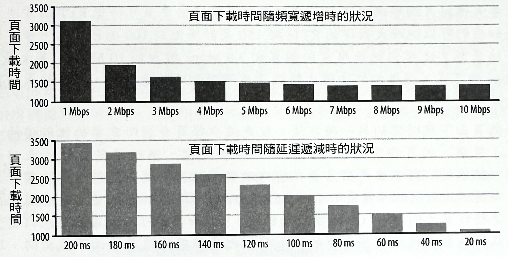
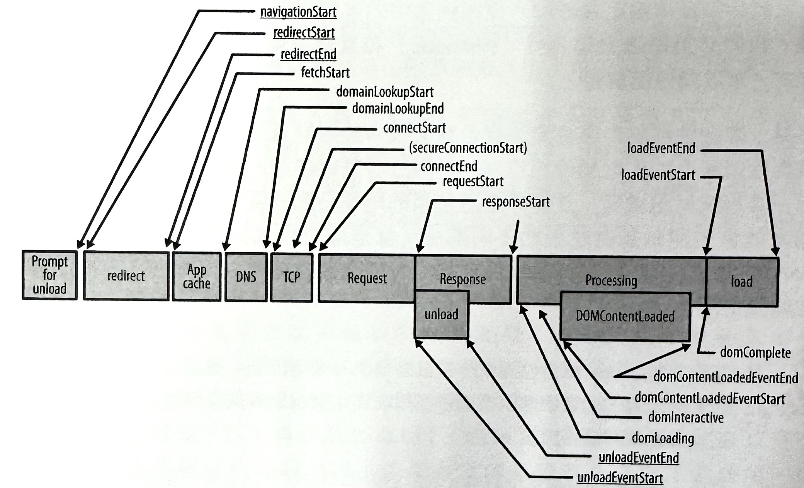

1-4-5 HTTP-網頁效能入門
在任何的複雜系統中，效能最佳化程序的其中一大部分，是在處理系統的許多不同且獨立層級之間的互動糾結情況，因為每一層都擁有它自己的一套的約束和限制狀況。截至目前為止，我們已經仔細地審視過許多個別的網路傳輸組件（包括各種實體的傳遞方法和傳輸協定）——而現在我們可以把重心轉到有關網頁效能最佳化處理的更大領域當中：
- 延遲與頻寬在網頁效能上的影響。
- 傳輸協定（TCP）在 HTTP 上的限制。
- HTTP 協定本身的特色和缺陷。
- 網頁應用程式的趨勢與效能要求。
- 瀏覽器的侷限與最佳化方式。
對所有不同層級當中的互動作業進行最佳化處理的方式，與解決一系列問題的情況並不一樣，因為每個問題之間都有其相依性，但儘管如此，還是會產生出許多可能的解決方案。建議和最佳慣例並沒有什麼固定組合，而且個別的組成元素還會持續演化——瀏覽器會變得更快，使用連線設定方式會改變，而且網頁應用程式在它們的範圍、環境和複雜度方面，都會持續成長。
因此，在我們深入列舉和分析個別效能的最佳慣例之前，最好可以先退一步來對真正的問題做個定義：最新的網頁應用程式是什麼？在我們的配置當中，我們有什麼工具可用？我們要如何測量網頁效能？以及系統的哪個部分會協助與阻礙我們的進展情況呢？
超文字、網頁和網頁應用程式
在過去幾十年中，網站的演進已經為我們帶來至少三種類型的體驗：超文件文件、豐富媒體網頁，以及互動式網頁應用程式。然而，在後兩者之間的分界線，有時候可能會讓使用者感到混淆，不過，從效能的觀點來看，這裡頭每個都需要一個完全不同的方式，來達到效能上的交流 （conversation）、指標（metrics）和定義（definition）。
-
超文字文件（Hypertext document）
超文字文件是全球資訊網的起源，而且是含有某些基礎格式，和超連結支援能力的純文字版本。以現代標準來看，這聽起來似乎不是那麼令人興奮，但它證明了全球資訊網的假定前提、遠見，以及優異的實用價值。
-
網頁（Web page）
HTML 工作團隊和早期的瀏覽器開發廠商將超文字的定義，擴充到能夠支援圖片和聲音之類的額外超媒體資源，並且加入了許多豐富層級的其他基本元素。網頁的時代已經來臨，而且允許我們搭配各種媒體類型來產生豐富的視覺排版效果一猶如平面印刷品一樣，視覺感豐富卻不具互動性。
-
網頁應用程式（Web application）
JavaScript 的加入，和後來的動態 HTML（Dynamic HTML, DHTML） 革命與 AJAX，再一次地撼動了整個產業，並將簡單的網頁轉變可以對瀏覽器裡頭的使用者，直接做出回應的互動式網頁應用程式。這對 Outlook Web Access（在 IE5 裡頭的 XMLHTTP 支援能力的起源）這類最初的完整瀏覽器應用程式，提供了一條可行之道，並且也將整個發展引導至一個讓腳本程式、樣式表，和標籤有著複雜相依關係的新時代。
一個 HTTP 0.9 議程是由一個會進行超文字傳遞作業的完整程序的單一文件請求（document request）所構成：其中包括單一文件、一個 TCP 連線，以及之後的連線關閉作業。因此，效能的調整作業就與針對經由短暫（short-lived）的 TCP 連線的單一 HTTP 請求，所進行的最佳化方式一樣簡單。
網頁的出現改變了從單一文件的傳輸方式，到文件加上其相關資源的處理作業方式。因此，HTTP 1.0 引進了 HTTP 後設資料（metadata）的概念，而 HTTP 1.1 則以定義快取機制、持續連線等等的各種效能導向的基本元素，來對它進行強化。因此，多個 TCP 連接現在正潛在地發揮作用著，而且重要的效能指標已經從文件載入時間（document load time），轉移到頁面載入時間（page load time, PLT）。
PLT 最簡單的定義，就是「直到瀏覽器裡的下載指示器停止旋轉為止的時間」。 而較技術性的定義是，當瀏覽器裡頭的文件和它的相關資源（JavaScript、圖片等等）已完成載入作業時，由瀏覽器所發出的 onload 事件。
最後，網頁應用程式把只會將媒體當作是標記裡的基本內容的強化方式的簡單網頁，轉變成一種複雜的相依關係：標記（markup）會定義出基本結構，樣式表（stylesheet）定義好版面配置方式（layout），而腳本語言（script）則會建立出最後的互動應用程式，並對使用者的輸入做出回應，或者在過程當中對樣式和標記進行修改。
因此，實際上已經是網頁效能指標的頁面載入時間，也逐漸變成一種無法勝任的效能基準：我們所建構的不再是單純的網頁，而是動態且互動性的網頁應用程式。除了測量每一個資源的載入時間（PLT）外，我們現在有興趣回答的是與應用程式有關的問題：
- 在應用程式載入進度裡的里程碑是什麼？
- 使用者最初互動的時間是什麼？
- 使用者應該參與的互動操作有哪些？
- 每個使用者的參與和轉化率是什麼？
你的效能和最佳化策略的成功情況，會與你對應用程式特定（application-specific）和規範的定義與反覆處理能力，有直接關係。沒有什麼比應用程式特定知識和測量基準還要重要的——尤其是與你工作上的底線目標和指標有關的時候。
DOM 、CSSOM 和 JavaScript
究竟我們所謂在最新的網頁應用程式裡頭，所能找到的「腳本、樣式，和標記的複雜相依性」，確實意義是什麼？為了回答這個問題，我們得先快速地審視一下瀏覽器架構，並且研究一下解析作業（parsing）、版面配置（layout），和腳本處理（scripting）管線如何交互作用，來產生出螢幕上的畫面結果。
圖 -1 ：瀏覽器處理管線：HTML、CSS 和 JavaScript
HTML 文件的解析作業（parsing）會把構成 DOM（Document Object Model， 文件物件模型）的組成元素給分析出來。同時，還有一個用來構成特定樣式表規則和資源，且經常被遺忘的重要成員—CSSOM（CSS Object Model, CSS 物件模型）。接著，這兩者會被組合起來，並產生出「渲染樹狀結構」（render tree），如此瀏覽器就有足夠的資訊去執行畫面的排版與繪製處理。一切就這樣順利完成！
然而，麻煩的是，這裡我們就必須開始跟亦敵亦友的 JavaScript
奮戰了。腳本程式的執行作業可以發出一個同步的
doc.write
，來阻斷 DOM
的解析作業和建構程序。同樣地，腳本程式可以查詢任何物件的特定樣式，而這意味著 JavaScript
也可以阻斷 CSS。因此，DOM 和 CSSOM 物件的建構作業經常都會糾纏在一起：DOM 建構程序在
JavaScript 被執行之前，將無法進行處理作業，而 JavaScript 執行作業卻又得在 CSSOM
處於可用狀態時，才能夠開始運作。
你的應用程式效能，尤其是最初的載入和「渲染時間」，都會直接受到標記、樣式表，和 JavaScript 之間的相依狀況所影響。此外，還記得「樣式在上，腳本在下」（styles at the top, script at the bottom）的最佳慣例吧？現在，你就知道原因了！因為渲染作業和腳本執行程序都會遭到樣式表的阻斷，因此你得盡快把 CSS 部分先下載給使用者才行。
剖析最新網頁應用程式的結構
到底最新的網頁應用程式看起來是什麼樣子？網站 HTTP Archive 可以協助解答這個問題。這個專案透過定期爬行最熱門的網站（在 Alex 網站的前一百萬名當中，挑選出來的 30萬個以上的網站），並記錄和彙整每個
個別目標的使用資源數量、內容類型、標頭，和其他後設資料的方式，來追蹤網頁的建立方式。
根據 2013 年初的記錄，一般的網頁應用程式是由下列這些元素所組成：
90 個請求、從 15 台主機擷取資源，並總計有 1,311 KB 的總傳輸量。
- HTML： 佔 10 個請求，52 KB
- 圖片： 佔 55 個請求，812 KB
- JavaScript： 佔 15 個請求，216 KB
- CSS： 佔 5 個請求，容量 36 KB
- 其他： 佔 5 個請求，容量 195 KB
當你讀到這段時，上述的數據也已經有所變動，而且還在持續成長中（如圖-2）一往上攀升的情況已經漸趨穩定，但可靠的趨勢卻絲毫沒有要停止的跡象。然而，先撇開確實的請求和位元組的計數資訊不談，這些個別元素的量級區分，都是經過一些審慎思考的結果一一般的網頁應用程式現在都會超過 1MB 的大小，而且是會由來自 15 個不同主機的 100 個左右的附屬資源所組成！
圖-2 ：平均傳輸大小和請求數量（HTTP Archive 網站）
和它們的桌面系統的仿製品所不同的是，網頁應用程式不需要有一個獨立的安裝程序：輸入網址，按下【Enter】鍵，程式就執行起來！然而，桌面應用程式只需耗費一次的安裝成本，但網頁應用程式則每上線一次就要執行一次「安裝程序」一這當中包括資源下載作業、DOM 和 CSSOM 的建置程序，以及 JavaScript 的執行作業。難怪網頁效能是個迅速成長的領域，並且是個熱門的討論主題！數以百計的資源、幾 MB 的資料，和十幾個不同主機，全都在幾百毫秒以內整合在一起，以協助滿足眾所期望的立即網頁體驗。
速度、效能與人類感知狀況
速度（speed）和效能（performance）都是相對性的用語。每個應用程式都會根據商業準則、脈絡環境、使用者期望，以及必須執行的工作複雜度，來表達它自己的需求設定。 也就是說，假如應用程式必須對使用者做出反應與回應的話，那麼我們就必須針對使用者感知狀況為中心，來規劃和設計處理時間常數。儘管生活節奏日益增快，也或者只是有那樣的感覺，然而無論是哪一種應用程式（線上或離線）或媒體（筆記型電腦、桌上型電腦，或是行動裝置）類型，我們的反應時間都是維持不變的（如表-1）。
表-1：時間和使用者感知狀況
上述表有助於解釋在網頁效能社群裡的非正式約略估計值：在 250 毫秒 以內，就得完成頁面渲染作業，或者至少要提供視覺化的回饋資訊，來留住參與其中的使用者！
在應用程式的瞬間感覺上，必須在數百毫秒內，對使用者的輸入情況，提供一個可察覺的回應。經過一秒以上的時間後，使用者與最初的工作任務之間的流程和參與情況就會被中斷。然而要是經過 10 秒以上 的時間的話，除非有提供任何的進度回饋資訊，否則工作任務往往就會被放棄。
現在，把一個典型網頁請求的 DNS 查詢 、隨後的 TCP 交握 ，以及幾次往返作業的網路延遲時間全都加起來，大概就有 100~1,000 毫秒 延遲時間，可能會很容易就被浪費在網路傳輸成本上（請參考圖-2）。難怪這麼多的使用者，尤其是在使用行動或無線網路時，都會要求更快的網頁瀏覽效能！
Jakob Nielsen 的《 Usability Engineering 》（優使性工程學）和 Steven Seow 的《 Designing and Engineering Time 》（設計和工程時間）是每個開發者和設計師必讀的兩本經典！時間是客觀的測量標準，卻又是主觀的個人感覺，而經驗可以透過精心安排與設計，來提升感知上的效能。
把網頁效能轉化成現金
「速度」是一種特性，而它不僅僅是速度本身的一種加速效果而已。從 Google 、 Microsoft 和 Amazon 所廣為人知的研究當中，全都透露著「網頁伺服器可直接轉化成金錢」的事實。例如，在 Bing 搜尋頁面 上每 2,000 毫秒 的延遲時間，就會減少原本能從每個使用者身上賺取到的 4.3% 的營收！
同樣地，在超過 160 個組織團體 的一份 Aberdeen 研究 顯示，在頁面下載時間當中的額外 1 秒 的延遲時間，會導致 7% 的轉換損失 ，減少 11% 的頁面瀏覽量 ，並降低 16% 的客戶滿意度 ！
更快的網站帶來更多的頁面瀏覽量、更高的參與情況，以及更高的轉換率。然而，千萬不要照本宣科，或者輕易相信適當引用的產業基準：請在你自己的網站上測量網頁效能的影響情況，以作為你自己的轉換指標。假如你想知道實際處理方式的話，請繼續往下閱讀，或者先跳到《 綜合性與真實使用者的效能測量方式 》一節。
分析資源瀑灑
在網頁效能方面，沒提到「資源瀑灑」（resource waterfall），就表示討論得不夠完整。
事實上，「資源瀑灑」很可能是在我們的處理當中，唯一最有洞察力的網路效能和診斷工具。每一個瀏覽器都會提供一些可用來檢視資源瀑灑狀況的測量工具，而且還有許多像
WebPageTest
之類的線上工具，甚至還能用來針對各種不同的瀏覽器，進行線上渲染處理。
WebPageTest.org 是一個開放源碼專案，也是一項免費的網頁服務，而這項服務會提供一套可從世界各地，來對網頁進行效能測試的系統：瀏覽器是執行在一個虛擬機器裏，並且可以搭配各種連線和瀏覽器導向的設定，來進行配置和腳本處理作業。經過測試之後，將可以通過一套網頁界面來檢視測試結果，而這樣的情況使得 WebPageTest 成為你的網頁效能工具箱裏，一套不可或缺的強力工具。
若要開始使用 WebPageTest 來進行測試，得先瞭解到，每個 HTTP 請求都是由好幾個不同階段所組成（如圖-3）：DNS 解析、TCP 連線交換、TLS 協商（假如有需要的話）、HTTP 請求的派送作業，以及最後的內容下載程序。這些個別階段的呈現畫面在每個瀏覽器當中，可能都略有不同，不過為了簡單記載，我們將會在本章當中使用 WebPageTest 版本。請確實地熟悉一下，每個顏色在你偏好的瀏覽器當中的意思。
圖 ：3一個 HTTP 請求的組成元素（WebPageTest）
貼近圖-3 的分析結果來看，Yahoo！首頁花了683毫秒 來進行下載，而那當中超過 200毫秒 的時間花在網路的等候狀況上一那整整佔了請求總延遲時間的 30%！然而，文件請求階段還只是個開始而已，因為就我們所知，一個最新的網頁應用程式還需要用到許多各式各樣的資源（如圖-4），才能產生出最後的輸出結果。準確來說，為了下載Yahoo！首頁，瀏覽器將需要從30個不同主機來擷取52個資源，而這些資源大小加起來總共會有486KB。
「資源瀑布」揭示了有關網頁結構和瀏覽器處理管線的一些重要見解。首先注意到，當www.yahoo.com 文件的內容正要被擷取的時候，會有新的 HTTP 請求被進行派送： HTML 解析作業會逐漸被執行起來，以便讓瀏覽器能夠先看出所需資源，並同時派送出必要的請求。因此，資源被擷取時機的安排工作，有很大的部分是由標記的結構所決定。瀏覽器可能會重新安排某些請求的優先次序，但對於文件裡的每個資源的漸增探索狀況，將會產生出明顯的資源「瀑布效應」（waterfall effect）。
其次請注意到，在所有資源被完全下載完成之前，就會引發「開始渲染」（綠色垂直線）程序，以便讓使用者在網頁還在進行建立作業的同時，即可開始與頁面進行互動。事實上，「文件完成」事件（藍色垂直線）會在剩餘素材還處於被下載的情況下，就被提早發出。換句話說，當瀏覽器下載指示器已經停止旋轉的情況下，使用者就能夠繼續進行他的工作任務，而 Yahoo！首頁卻還在背景當中，逐漸地填入廣告和社交組件之類的額外內容。
圖-4 ：Yahoo.com 資源瀑布（WebPageTest, 2013年3月）
在上述範例當中，首次渲染時間、文件完成時間，以及最後一個資源被完成讀取的時間之間的差異，就是在討論不同的網頁效能指標時，一個很重要的必要脈絡關係圖解。在這三個指標當中，到底要追蹤哪一個才對？這問題並沒有一個絕對的答案，因為每個應用程式都有所不同！Yahoo！工程師們選擇的是對頁面進行最佳化，因此利用了漸增下載作業來讓使用者能夠提早開始瀏覽重要內容，而為了達到這樣的目的，他們必須運用應用程式特定知識，來決定出內容的重要性和呈現的優先次序。
不同瀏覽器會針對個別資源請求被派送的時機和次序，來實作出不同的處理邏輯。也因此，應用程式的效能將會因為瀏覽器的不同而有所差異。
WebPageTest 允許你在執行測試時，同時選擇瀏覽器的位置和版本。
「網路瀑布」是一種有助於揭露出針對任何網頁或應用程式，所選用的最佳化方式的成效和缺點的強大工具。在資源瀑布的分析和最佳化作業之前的程序，通常會被稱之為「前端效能分析和最佳化」。然而，這樣的名稱可能是個不恰當的選擇，因為它會讓很多人誤解，所有的效能瓶頸目前都是在客戶端上。事實上，當 JavaScript、CSS，和渲染管線作業都相當吃緊，且處於資源存取密集的情況下，伺服器的回應時間和網路延遲部分（所謂的「後端效能」）對於資源瀑布的最佳化方面來說，就顯得相當重要。畢竟，你無法去解析或執行某個被阻擋在網路上的資源！
為了說明這個實際過程，我們就必須從資源瀑布，切換到 WebPageTest 所提供的連線檢視畫面上（如圖 -5）。
與資源瀑布所不同的是，每筆記錄所代表的是一個單獨的 HTTP 請求，而連線視圖所呈現的是，被用來對 Yahoo！首頁進行資源讀取作業的每個 TCP 連線的生命週期 — 在這個案例當中總共有 30 個。在這當中有什麼特別之處嗎？請注意一下，以藍色區塊表示的下載時間部分，都只是每個連線的總延遲時間的一小部分：這當中有 15 個 DNS 查詢、30 個 TCP 交握，以及許多在等待接收每個回應的第一個位元組資料時的網路延遲情況（以綠色區塊表示）。
好奇為何某些請求只會出現綠色長條（等待第一個位元組的時間）嗎？許多回應其實都是非常小的，也因此下載時間就不會被登記在圖表上。事實上，對於許多請求來說、回應時間通常都是受到往返延遲和伺服器的處理時間所左右的。
圖-5 ：Yahoo.com 資源瀑布（WebPageTest, 2013年3月）
最後，壓軸的部分來了。真的會讓許多人感到驚訝的部分，就在連線視圖的最底下：請參考圖 10-5 來檢視一下頻寬利用圖表。
除了幾個很短的資料激增情況以外，可用連線的利用狀況是相當低的——這表示，我們並沒有受到連線頻寬的限制！這是個異常，或糟糕的瀏覽器的錯誤狀況嗎？很遺憾的，都不是。
換句話說，頻寬並不是大多數網頁應用程式的效能限制因子。相反地，瓶頸其實是客戶端和伺服器之間的網路往返延遲部分。
效能的支柱：運算、渲染與網路傳輸作業
網頁程式的執行作業，主要會牽涉到三項工作任務：資源的擷取程序、頁面版型配置和渲染處理，以及 JavaScript 的執行作業。渲染（rendering）和腳本程式（scripting）階段都會以單一執行緒的交互模式來執行；它不可能在產生 DOM（Document Object Model）的情況下，還同時去執行修改作業。因此，對渲染作業和同時運作中的腳本程式執行程序的最佳化處理方式，就如同我們《DOM、CSSOM 和 JavaScript》裡頭所看到的那樣，是相當重要的。
然而，要是瀏覽器在網路上遭到阻斷，而要等候資源來到的話，即使對 JavaScript 執行程序渲染管線作業進行最佳化處理，也不會有太大的成效。網路資源的快速與有效傳遞，是每個以瀏覽器來執行的應用程式的效能關鍵。
但是，有人可能會問：「網際網路的速度日益增快，那這個問題就沒辦法因此獲得解決嗎？」是的，我們的應用程式會變得更大，然而，要是整體總平均速度已經有 3.1 Mbps（請參考《網路邊緣的頻寬》一節），並且就像每個網際網路供應商和行動電信商到處在宣傳的跡象那樣，傳輸速度還會持續成長的情況下，還有什麼好擔心的呢？遺憾的是，就像你可能已經料到，而且就像 Yahoo！範例所呈現的那樣，要是問題那麼容易解決的話，那你根本就不會來閱讀這本書了。讓我們稍微來仔細檢視一番。
有關頻寬和延遲的趨勢與相互影響之類的討論細節，請參考《「延遲」與「頻寬」的基本概念》。
頻寬再多也無濟於事（幫不上忙）
請稍安毋躁——頻寬當然有關係！畢竟，我們當地的 ISP 和行動電信商的每個廣告都在持續地提醒我們它的諸多好處：更快的下載、上傳，以及串流傳輸，全都可以高達 XXMbps 的速度（其中的 XX 部分，請自行改為最新的數值）！
對更高頻寬資料傳輸速率進行存取總是件好事，尤其是會牽涉到一大批資料傳輸作業的情況——像是影片與聲音串流，或者其他的任何大型資料傳輸類型的情況。然而，在每天需要從十幾個不同主機上，擷取數百個相對較小的資源的網頁瀏覽過程當中，往返延遲就會是限制因子：
- 對於來自 Yahoo！首頁的 HD 影片進行串流處理，會受到頻寬限制。
- Yahoo！首頁的下載和渲染作業，會受到延遲限制。
在你嘗試進行串流處理時，你可能會根據影片的品質和編碼方式，而需要用到幾百 Kbps 到幾 Mbps 的頻寬容量——例如，HD 1080p 的視訊串流會需要用到 3Mbps 以上的頻寬容量。這個資料速率對於許多使用者來說是可以達到的——而這可以從 Netflix 這類串流視訊服務的逐漸受到熱烈歡迎的成長情況得到印證。 那麼，為何下載非常非常小的網頁應用程式，對於一個 HD 影片的串流處理的連線容量來說，會是一種挑戰呢？
延遲成為效能瓶頸的情況
我們已經在先前的章節裡，談到過可建立出一個不錯的定性理論的所有必要主題，來說明有關「延遲」可能會成為日常網頁瀏覽的限制因子的原因。然而，一圖勝千言，因此讓我們來檢視由 SPDY 協定的創造者之一的 Mike Belshe，針對各種頻寬與延遲時間，在網站上某些最熱門目標的頁面下載時間的影響方面，所進行的定量分析研究結果（如圖-6）。
圖-6 ：頁面下載時間與頻寬和延遲關係

這項由 Mike Belshe 所做的研究，成為他在 Google 針對 SPDY 協定發展上的一個起始點，而這個協定後來也變成是 HTTP 2.0 協定的基礎。
在第一項測試當中，連線延遲是被維持在固定狀態，而連線頻寬則是從 1Mbps 再逐漸增加到 10 Mbps。首先請注意到，當連線從 1Mbps 升級到 2 Mbps 時，頁面下載時間幾乎減半一這正好就是我們所想要看到的結果。然而，在那之後，在頻寬上的每次漸增改善比率卻逐漸減少。以可用頻寬超過 5Mbps 的時間來看，我們發現到就只有個位數的改善比率，而當我們從 5 Mbps 升級到 10Mbps 時，頁面下載時間竟然只有 5% 的改善效果！
Akamai 的寬頻速度報告（請參考《網路邊緣的頻寬》）顯示，在美國的一般消費者早就已經是以 5Mbps 可用頻寬來存取網頁了，許多的其他國家也快速地在逼近。因此，我們得出了這樣的結論——在美國的一個普通消費者，假如有意要改善其網頁瀏覽速度的話，將不會因為升級連線的可用頻寬而得到什麼改善效果。她或許能夠對較大的媒體檔案進行更快的串流或上傳作業，但含有那些檔案的頁面將不會明顯地下載得更快——這與頻寬沒什麼關係。
然而，延遲實驗則訴說著另一種完全不同的情況——針對延遲，每次改善 20 毫秒 的情況來看，我們會在頁面下載時間上，獲得線性的改善效果！或許，當我們在決定選用哪一家 ISP 公司時，應該要以延遲時間的最佳化效果來決定，而不只看可用頻寬？
若要大幅提升網際網路速度，我們應該去發掘出更多可降低 RTT（往返時間） 的方法。假如我們可以把跨大西洋的 RTT 從 150 毫秒 降低到 100 毫秒 的話，會有什麼結果呢？比起你把使用者的頻寬從 3.9 Mbps 增加到 10 Mbps ，甚至是 1 Gbps ，這樣的作法還比較能夠在網際網路的速度上，產生較大的提升效果。
降低頁面下載時間的另一種方法，就是減少每頁負載所需要的往返傳輸次數。目前，網頁都需要在客戶端和伺服器之間，進行特定數量的來回傳輸。往返的次數主要是因為要在客戶端與伺服器之間先進行交握作業，才可以開始進行通訊（像是 DNS 、 TCP 和 HTTP 等），而通訊協定也會引發往返傳輸作業（例如， TCP 緩步啟動機制 ）。 假如我們可以改善協定來以更少的往返次數去傳輸這些資料的話，我們也應該能夠改善頁面下載時間。這就是 SPDY 的目標之一。--Mike Belshe《 More Bandwidth Doesn't Matter (Much) 》
上述結果對許多人來說可能是個意外驚喜，但其實也並不是那麼樣的意外，因為它們是在底層協定的效能特性上的一種直接後果——包括 TCP 交握 、 流量與擁塞控制 ，以及 封包遺失的線頭阻斷機制 。 大部分的 HTTP 資料流量都是由小量但突發的資料傳輸狀況所組成，而 TCP 都是針對長時間連線和大批資料傳輸狀況來進行最佳化的。因此，網路往返時間就會在大多數情況下，變成是 TCP 吞吐量和效能的限制因子 ；相關細節請參考《 TCP 的最佳化處理 》。因此，延遲時間對於 HTTP 以及透過它來進行傳輸的大多數網頁應用程式來說，也會是效能瓶頸。
假如延遲是大多數有線連線的效能限制因素的話，那麼你可能會直覺想到，對於無線客戶端來說，它更會是一個相當重要的效能瓶頸： 無線傳輸的延遲明顯更高 ，因而就要把網路最佳化處理變成是行動網路的優先處理工作。
綜合性與真實使用者的效能測量方式
假如我們能夠進行測量，就有辦法加以改善。問題是，我們目前所測量到的是否就是正確的標準？而處理的程序是否可靠呢？正如我們先前所提到的，最新網頁應用程式的測量方式是一種很不尋常的挑戰：沒有任何可適用於每一種應用程式的單一標準，而這意味著，我們必須謹慎地定義好每一種案例當中的客製化標準。然後，當標準被建立起來的時候，我們必須把透過綜合性（synthetic）和真實使用者（real-user）的效能測量的組合方式，來收集效能資料。
廣義來說，綜合性測試作業會牽涉到含有某種可控制測量環境的任何處理程序：一個會執行整套效能組合的本地端建置程序、針對分級基礎建設的負載測試，或者是一組會定期執行一套程式反應處理，並記錄處理結果的地理分散式監控伺服器。這些測試裡的每一個都可能會去測試基礎建設的不同部分（像是應用程式伺服器的吞吐量、資料庫效能、DNS 時機安排等等），而當作穩定基礎的伺服器會協助去偵測出系統特定組件上的退化或縮減情況。
在設定好之後，綜合性測試作業就會提供一個可控制，並且可重複進行的效能測試環境，而這個環境很適合在效能退化狀況影響到使用者之前，就能先被進行識別和修護處理。
提示： 找出你的關鍵效能標準，並針對你的綜合性測試的每一個部分，設定好一個「預算指標」（budget）。假如預算指標被超支的話，就發出一次警告！
然而，綜合性測試不足以辨別出所有的效能瓶頸。具體來說，問題是在於，針對於會決定應用程式的最後使用者體驗的真實影響因素上，所收集到的測量資訊並不能呈現出其廣泛的多樣性。而造成這個缺口的某些因子，包括了以下這些：
- 情節與頁面選擇： 複製真實使用者的瀏覽模式是有其困難的。
- 瀏覽器快取機制： 效能可能會因為使用者的快取狀態而會有很大的差異。
- 中介環境： 效能可能會因為中介的代理伺服器或快取設備而有所不同。
- 硬體的多樣性： CPU、GPU 和記憶體效能的範圍很廣。
- 瀏覽器的多樣性： 新舊瀏覽器的版本範圍很廣。
- 連線狀況： 實際連線的頻寬和延遲會不斷變化。
這些和類似因素的組合結果，意味著除了綜合性測試以外，我們還必須搭配真實使用者測量方式（real-user measurement, RUM）來增加我們的效能策略，以擷取使用者在體驗。
我們的應用程式時的實際效能。所幸，W3C網頁效能工作團隊（W3C Web Performance Working Group, W3C WPWG）已經引進了「導覽計時 API」（Navigation Timing API），而使得我們的資料獲取程序變成是一項簡單的工作（如圖-7），而這套 API 現在已經被許多最新桌上型和行動裝置瀏覽器廣泛支援了。
圖-7 ：由導覽計時機制所提供的使用者特定效能計時器

直到 2013 年初，導覽計時機制在桌上型電腦和行動平台上，就只有 IE9+、Chrome 6+和 Firefox7+瀏覽急器有支援。值得注意的是，Safari 和 Opera 瀏覽器當時都還沒提供這項支援能力。最新的支援情況，請參考 http://caniuse.com/nav-timing 網站。
導覽計時的真正好處是，它會透過每個瀏覽器裏頭的標準化
performance.timing
物件，來揭露出許多過去不容易取得，像是 DNS 和 TCP
連線時間這類具有高精密度（以微秒為單位的時間戳記）的資料。因此，資料集運程是非常簡單的：載入頁面、從使用者的瀏覽器獲取計時物件，並將它的標記狀況回應至你的分析伺服器！透過擁擠這項資料的方式，我們就可以觀察到類似真實使用者，在實際的硬體上，以及跨越各種不同網路時，所會看到的應用程式的真正效能。
真實使用者測量資料的分析方式
在分析效能資料時，通常都會檢視資料的基本分佈情況——撇開平均值的部分不看，並將焦點放在直方圖（histograms）、中位數（medians）和分位數（quantiles）的部分。在分析歪斜（skewed）和多模式（multimodal）分佈狀況時，平均值將會引導至無意義的指標上。圖-8 所呈現的，是在單一網站上，針對頁面下載時間的歪斜分佈，以及伺服器回應時間的多模式分佈的兩種分佈類型的實際案例（這兩種模式與應用程式伺服器的快取與未快取頁面產生時間有關）。
圖-8 ：igvita.com 的頁面下載時間（歪斜）和回應時間（多形態）的分佈情況
請確保你的分析工具可以對你的效能資料提供正確的統計指標。上述資料是取自於 Google Analytics 在「Site Speed」（網站速度）報告裡頭，所提供的一份直方圖畫面。Google Analytics 會在分析追蹤程式被安裝的時候，自動收集 NavigationTiming 資料。事實上，市場上還有許多同樣會提供 Navigation Timing 資料獲取和回報機制的其他資料分析業者。
最後，除了導覽計時以外，W3C 效能團隊還規範了「使用者計時」（User Timing）和「資源計時」（Resource Timing）這兩套 API。「導覽計時」只會提供根文件（root document）的效能計時器，而「資源計時」則會針對頁面上的每個資源提供類似的效能計時資料，以便讓我們取得頁面的完整效能剖析資訊。同樣的，「使用者計時」會搭配相同的高解析度計時器的協助，來提供一套簡單的 JavaScript API，以標記和測量應用程式特定效能指標：
function (init) {
performance.mark("startTask1"); // 1
applicationCode1(); // 2
performance.mark("endTask1");
logPerformance();
}
function logPerformance() {
var perfEntries = performance.getEntriesByType("mark");
for (var i = 0; i < perfEntries.length; i++) { // 3
console.log("Name: " + perfEntries[i].name +
" Entry Type: " + perfEntries[i].entryType +
" Start Time: " + perfEntries[i].startTime +
" Duration: " + perfEntries[i].duration + "\n");
console.log(performance.timing); // 4
}
}
-
以相關名稱（
startTask1）來儲存（標記）時間戳。 - 執行應用程式代碼。
- 迭代循環並記錄使用者計時資料。
- 記錄目前頁面的導覽計時物件。
導覽、資源，和使用者計時 API 的組合會提供所有的必要工具，以便對每個網路應用程式進行真實使用者效能測量工作的處理和管理作業；這下已沒有藉口說自己沒辦法做到了。我們會針對我們測量到的部分進行最佳化處理，而 RUM 和綜合性測試是用來協助你辨別出效能裡的退化狀況和真正瓶頸，以及你的應用程式的使用者體驗的補助方法。
客製化和應用程式特定指標是用來建立一套可靠效能策略的關鍵。沒有任何一種可用來測量或定義使用者體驗品質的通用方法。也就是說，我們必須定義和處理每個應用程式裡的特定里程碑和事件，而整個程序需要靠專案裡的主管、設計師，和開發者等等的所有相關人員之間的通力合作才行。
瀏覽器最佳化方式
假如到目前為止，我們只讓大家感覺到「最新的瀏覽器不過是個簡單的網路連線管理程式」的話，那就太罪過了！效能是每個瀏覽器廠商的主要競爭特性之一，而且既然網路效能也是個重要關鍵，那麼，瀏覽器會逐漸變得越來越聰明，也應該不會讓你感到意外才是，例如，可能的 DNS 查詢作業的預先處理機制、可能目標的預先連線，以及頁面上重要資源的預先擷取和優先排序作業等等。
執行最佳化工作的確切列表，將隨各瀏覽器廠商的不同而有所差異，但它們的核心最佳化方式，可以被區分成兩大類：
-
文件感知（document-aware）最佳化方式
網路堆疊會與文件、CSS 和 JavaScript 解析管線整合在一起，以協助盡早去識別出重要的網路資源，並安排優先次序，而將它們提早派送出去，並取得頁面給某個互動狀態。這通常會透過資源優先權指派作業、先行解析機制，以及類似的技術來完成。
-
推測性（speculative）最佳化方式
瀏覽器可以隨著時間而學會使用者的導覽模式，並試著執行推測性最佳化方式，以便藉由預先解析 DNS 名稱、預先連結可能的主機名稱，以及其他機制，來預測使用者的可能動作。
所幸，這些最佳化方式全都會幫我們自動完成，而且通常節省數百毫秒的網路延遲。然而，重要的是，要了解這些最佳化作業的運作方式和原因，因為這樣我們才可以協助瀏覽器在這個部分運作得更好，進而加速我們應用程式的執行效能。大多數瀏覽器都會採用以下四種技術：
-
資源預先擷取與優先權安排機制
文件、CSS 和 JavaScript 解析器可能會與網路堆疊溝通額外的資訊，以指出每個資源的相對優先次序：當下最初渲染作業所需要用到的資源會被賦予高優先權，而低優先權的請求可能會被暫維持在佇列當中。
-
DNS 預先解析處理
可能的主機名稱會被提前進行解析，以避免在未來某個 HTTP 請求上所會出現的 DNS 延遲。預先解析作業有可能會透過學習導覽記錄、滑鼠游標在連結上盤旋之類的使用者操作情況，或者是網頁上的其他訊號，而被觸發起來。
-
TCP 預先連接機制
在 DNS 解析作業之後，瀏覽器可能會以一個 HTTP 請求的預測情況，來推測性地打開 TCP 連接。假如推測正確的話，就可以減少一個完整的網路延的往返作業（TCP 交握程序）。
-
頁面預先渲染作業
有些瀏覽器允許你去提示下一個可能的目的地，並且可以把整個頁面給預先渲染在一個隱藏分頁當中，如此就可以在使用者開始進行導覽的時候，立刻切換到已預先渲染好的頁面。
若要深入瞭解 Google Chrome 在這些和其他網路最佳化處理的實作方式的話，請至 《High Performance Networking in Google Chrome》 （Google Chrome 的高效能網路連線方式）一文。
從外面來看，最新的瀏覽器網路堆疊，會將它本身以簡單的資源擷取機制的方式來呈現，但是從裡面來看，它是網頁效能的最佳化方式上，一個既複雜，卻又令人感興趣的研究案例。因此，我們在這個部分當中，可以怎樣協助瀏覽器呢？若要著手進行這項處理，就先把注意力放在每個頁面的結構和遞送作業上：
- 像 CSS 和 JavaScript 之類的關鍵資源，應該要安排在文件裡頭會被盡早發現的地方。
- CSS 應該要被盡早進行傳遞，以解除渲染和 JavaScript 執行作業的阻斷狀況。
- 非關鍵性的 JavaScript 應該被往後推延，以避免阻擋到 DOM 和 CSSOM 的建構作業。
- HTML 文件會被解析器以逐步漸進的方式進行解析處理；因此，文件部分應該被間歇性地送出，以獲得最佳效能。
進一步地，除了頁面結構的最佳化處理之外，我們還可以把額外提示嵌入到文件裡頭，以便將它所能執行的額外最佳化方式，透露給瀏覽器知道：
<link rel="dns-prefetch" href="//hostname_to_resolve.com">
<link rel="subresource" href="/javascript/myapp.js">
<link rel="prefetch" href="/images/big.jpeg">
<link rel="prerender" href="//example.org/next_page.html">
- 預先解析特定主機名稱。
- 提早擷取在這個頁面上，之後才會被找到的關鍵資源。
- 提早擷取本次或未來導覽所會使用到的資源。
- 根據下一個使用者目標的預期情況，來預先渲染特定畫面。
以上的每一個都是推測性最佳化方式的一種提示技巧。瀏覽器不保證它能有所作用，但它可以運用提示來對它的下載策略進行最佳化。遺憾的是，並非所有的瀏覽器都支援所有的提示方式（請參考表-2），不過要是它們沒有具備這類支援能力的話，那麼提示就會被當作是一個無作用的指令來處理，而且也不會造成任何損害；這樣可以讓每個技巧在有可能支援的瀏覽器當中，適當發揮作用。
表-2 ：推測性瀏覽器最佳化提示功能支援情況
IE 9 支援 DNS 預先擷取功能，不過它被稱作是「prefetch」。在 IE10 以上的版本當中，dns-prefetch 和 prefetch 是完全相同的意思，因此在這兩種情況下都會進行一次 DNS 預先擷取處理。
對於大多數使用者，甚至是網頁開發者來說，DNS、TCP，和 SSL 延遲都是完全透明的，而且會在網路層上進行協商以便讓延遲降到最低程度。這些步驟當中的每一個對於整體的使用者體驗都很重要，因為每一個額外的網路往返作業都可能會增加數十或數百毫秒的網路延遲時間。透過協助瀏覽器去預測這些往返狀況的方式，我們就可以移除這些瓶頸，並更快地遞送出更好的應用程式。
針對 Google 搜尋的第一個位元組時間（Time to First Byte, TTFB）的最佳化處理
HTML 文件會被瀏覽器以逐步漸進的方式進行解析處理，而這表示伺服器可以，也應該盡可能經常地發送出可用的文件標記。這讓客戶端能夠盡快發現關鍵資源，並開始進行擷取處理。
Google 搜尋可以算是受惠於這種技術的一個最佳典範：當有個搜尋請求到達的時候，伺服器會立刻送出搜尋頁面的靜態標頭資訊，然後才開始分析查詢內容。也就是說，根本就不需要為每個搜尋頁面，都去等待那個完全相同的標頭部分！接著，當客戶端正在解析標頭標記內容時，搜尋查詢命令就會被派送給搜尋索引，而文件裡頭包括搜尋結果的其餘部分，就會在搜尋結果準備就緒時被傳送給使用者。此時，像登入者名稱之類的標頭動態部分，則會透過 JavaScript 而被填入進來。